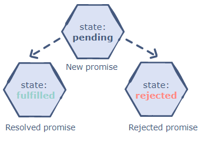

As we know that callback functions were initially used to handle asynchronous operations. However, callbacks functions were limited in terms of functionality and often led to confusing code, so, promises were introduced to deal with these problems.
"I Promise a Result!"
"Producing code" is code that can take some time.
"Consuming code" is code that must wait for the result.
A Promise is a JavaScript object that links producing code and consuming code.
A promise in JavaScript is similar to a promises we do in real life. When we make a promise, it is a guarantee that in future, we are going to do something. A promise has two possible outcomes: it will be kept when the time comes, or it will not. Similarly, in JavaScript, when we define a promise, either it will be resolved when the time comes, or it will get rejected.
The Promise object represents the eventual completion (or failure) of an asynchronous operation and its resulting value.
Promises are the ideal choice for asynchronous programming. Promises can handle multiple asynchronous operations easily and are better at error handling as compared to callbacks and events.

Promise Syntax:
let myPromise = new Promise(function(myResolve, myReject) {
// "Producing Code" (May take some time)
myResolve(); // when successful
myReject(); // when error
});
// "Consuming Code" (Must wait for a fulfilled Promise)
myPromise.then(
function(value) { /* code if successful */ },
function(error) { /* code if some error */ }
);
When new Promise is created, the function passed into it runs automatically. It contains the producing code which produces the result. Its arguments resolve and reject.
Promise Object Properties:
A JavaScript Promise object can be:
Pending
Fulfilled
Rejected
The Promise object supports two properties: state and result.
While a Promise object is "pending" (working), the result is undefined.
When a Promise object is "fulfilled", the result is a value.
When a Promise object is "rejected", the result is an error object.
myPromise.state myPromise.result
"pending" undefined
"fulfilled" a result val
"rejected" an error object